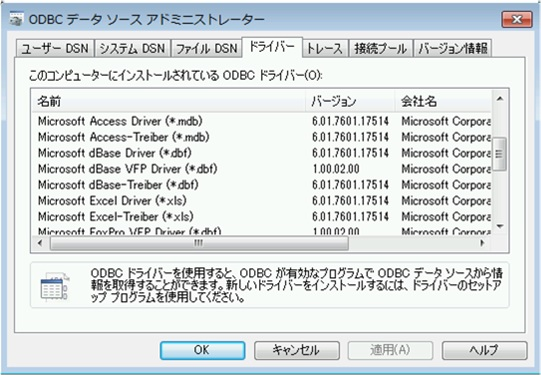
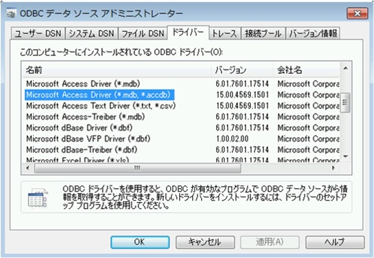

Update: 2020/08/07
クイック実行形式 Office の OLEDB について以下の記事を公開しました。
クイック実行形式 Office 環境で、Office 以外のアプリケーションから Office の OLEDB を利用できます
https://officesupportjp.github.io/blog/クイック実行形式 Office 環境で、Office 以外のアプリケーションから Office の OLEDB-ODBC を利用できます/
(※ 2016 年 9 月 6 日に Japan Office Support Blog に公開した情報のアーカイブです。)
こんにちは、Office サポート チームです。
クイック実行形式 でインストールした Office 2013 / 2016 では、Office ファイルに関する ODBC ドライバや OLEDB 関連のコンポーネントがありません。
本記事ではこの現象について理由と回避方法をご案内いたします。
現象
クイック実行形式 (C2R 形式) の Office 2013 / 2016 製品がインストールされた環境では、以下の現象が発生します。
[コントロール パネル] の [ODBC データソース] で、Access ファイルや Excel ファイルへのデータソースを作成することができません。
※[ODBC データソース アドミニストレータ] に Accessドライバーや Excel ドライバーが表示されません。
Microsoft.ACE.OLEDB.12.0 の OLEDB プロバイダーを使用した接続ができません。
<C2R 形式の Office>
ドライバーに Microsoft Access Driver (*.mdb, *.accdb) / Microsoft Excel Driver (*.xls,*xlsx,*.xlsm,*xlsb) がありません。

<MSI 形式の Office>

この現象については以下の公開資料でご案内しております。
タイトル : Access ODBC ドライバーまたは OLEDB プロバイダーを外部アプリケーションの Office のクイック実行を使用することはできません。
URL : https://support.microsoft.com/ja-jp/kb/2874601
現象が発生する理由
Office 2013 や Office 2016 には、「クイック実行形式 (C2R)」と「Windows インストーラー形式 (MSI)」があります。
Windows インストーラー形式の Office 製品は、インストールすることで、ローカル オペレーティングシステム (使用しているマシンの Windows OS) 上に Office に付属している ODBC ドライバや OLEDB に関するファイルやレジストリ情報がインストールされます。
一方、クイック実行形式 Office 製品は、中核的な仮想化とストリーミングの Microsoft Application Virtualization (App-V) テクノロジに基づいており、クイック実行 リソースは、ローカル オペレーティング システム上の分離された仮想環境で実行されます。
そのため、ローカル オペレーティング システムである Windows OS上には、クイック実行形式の Office 製品をインストールした際に、
Office に付属している ODBC ドライバや OLEDB に関するファイルやレジストリ情報が Windows インストーラー形式をインストールした時とは異なる形で登録されます。
このような相違点があることから、クイック実行形式の Office 2013/2016 では、上述の現象が発生します。
回避方法について
以下のいずれかの Windows インストーラー形式の Office 製品をインストールします。
いずれかをインストールすることで、Access ファイル (mdb/accdb 等) や Excel ファイル (xls/xlsx 等) へ ODBC/OLEDB 接続を行うことが可能です。
Microsoft Access Database Engine 2010 Redistributable
https://www.microsoft.com/en-us/download/details.aspx?id=13255
※ 日本語版 : https://www.microsoft.com/ja-JP/download/details.aspx?id=13255
Microsoft Access 2013 Runtime
http://www.microsoft.com/en-us/download/details.aspx?id=39358
※ 日本語版 : https://www.microsoft.com/ja-JP/download/details.aspx?id=39358
補足1 :
同じバージョンの クイック実行形式と Windows インストーラー形式の Office を同一の PC にインストールすることはできません。
既に、クイック実行形式の Office 2013 製品がインストールされている環境では、Access Runtime 2013 はインストールできないため、Access データベースエンジン 2010 をインストールします。
補足 2 :
Access Runtime は、Access 製品版がインストールされていない環境上で、Access で作成したアプリケーションを利用するための製品です。
例えば、accdb ファイルをダブルクリックすると、Access Runtime が起動し、accdb ファイルが開きます。
Access Runtime で Access ファイルを開く必要がない場合は、Access データベースエンジン 2010 のご利用をご検討ください。
[MSDN ライセンスについて]
MSDN サブスクリプションでは、Office 2013/2016 を次の形式で提供しています。
- Office 2013 : Windows インストーラー形式 (MSI)
- Office 2016 : クイック実行形式 (C2R)